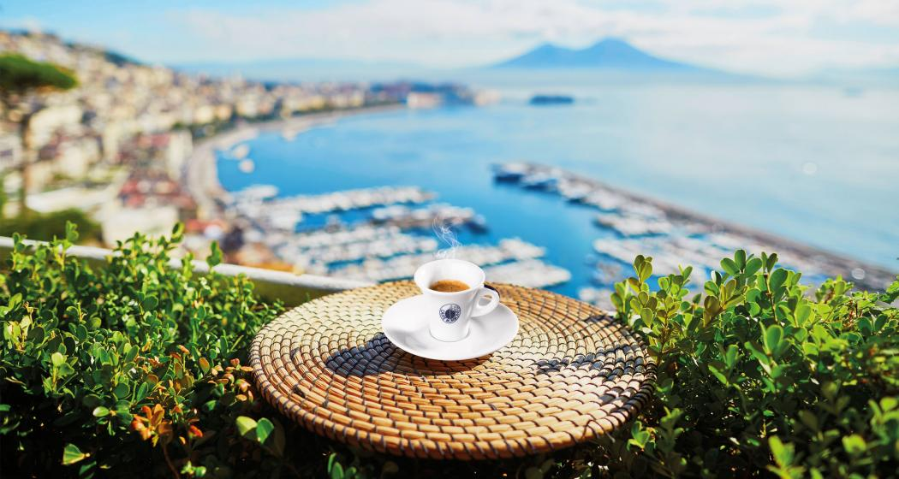
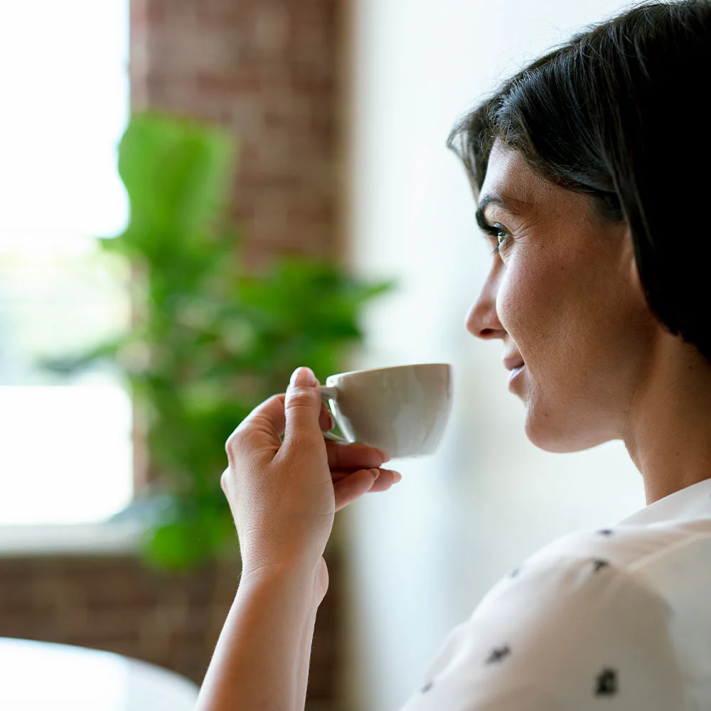
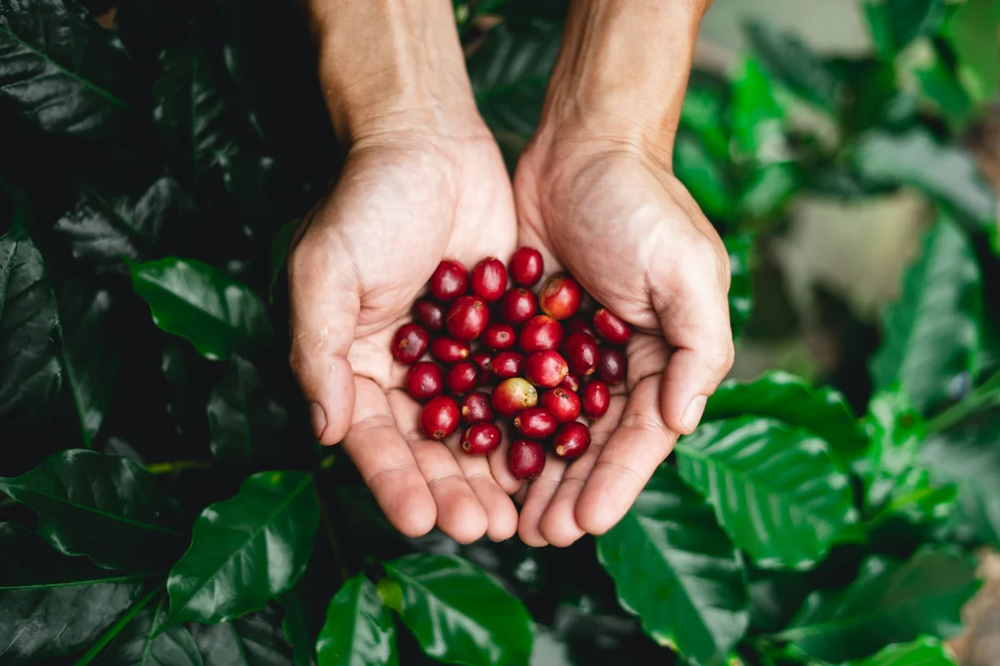
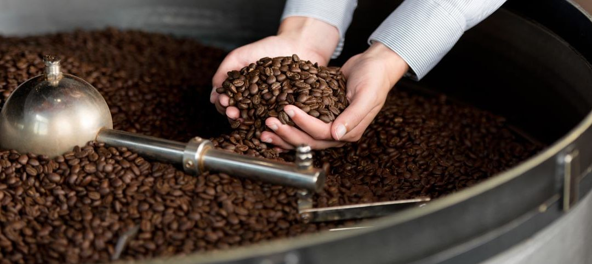

Il nostro mondo
Attenti al sostenibile e pionieri nel proporre cialde compostabili, oggi Caffè Borbone (Aromatika Spa controllata al 60% da Italmobiliare)
è leader nel comparto cialde e tra i maggiori player di caffè in capsule, ha centinaia di dipendenti e un fatturato in continua crescita!
Infatti, grazie ad azioni di marketing capillari, alla meticolosa ricerca della qualità e
a investimenti pubblicitari in spot e fiction di successo che,
in pochi anni, da marchio locale siamo diventati un'azienda leader di mercato in Italia
nel settore delle cialde compostabili e seconda nel segmento delle capsule compatibili.
Abbiamo conquistato il mercato nazionale anche online, con alcune miscele che in breve sono diventate bestseller su Amazon
ed abbiamo inoltre avviato un percorso di internazionalizzazione, inizialmente in Europa e successivamente negli Stati Uniti.
Nel corso degli anni, Caffè Borbone ha saputo creare un brand amato e riconosciuto;
la sua crescita è stata alimentata dalla qualità di un prodotto in continua evoluzione,
capace di attrarre e fidelizzare diverse tipologie di consumatori alla ricerca di un gusto autentico.
Il segreto del successo dei nostri prodotti sta nell'accurata selezione delle materie prime,
nel processo di lavorazione automatizzato ma comunque supervisionato h24 e una costante proiezione verso il futuro.
Caffè Borbone non è dunque un'azienda come tante, ma una famiglia che ha coltivato nel corso degli anni con dedizione
l'amore e la passione per il caffè e per il proprio territorio, riuscendo a sfruttare le nuove tecnologie
per creare un prodotto di qualità nel pieno rispetto della tradizione partenopea.


Il nostro caffè
Il nostro caffè viene tostato secondo il metodo tradizionale che comprende l'unione di una cottura a 650° e
l'ausilio di un tamburo rotante metallico, il quale permette di cuocere i chicchi in modo uniforme,
andando a valorizzare al massimo l'espressività aromatica del caffè.
Il caffè macinato appena tostato viene subito confezionato in singole porzioni, il tutto in atmosfera protettiva per preservare
la freschezza della materia prima e le qualità organolettiche del caffè, in totale igiene e sicurezza.
La porzione di caffè, custodita all'interno della sua confezione, grazie al confezionamento in assenza di ossigeno,
evita la volatilizzazione degli aromi, preservandoli e conservando più a lungo la fragranza e il profumo
del caffè appena tostato.
Dal chicco alla tazzina, per noi non sono solo parole, infatti, grazie all'adesione al programma
At Source Verified di Olam Food Ingredients assicuriamo:
- La tracciabilità delle materie prime con dati ed approfondimenti per area geografica di origine;
- Verifiche di terze parti, anche dell'applicazione del Codice Fornitori OFI;
- Iniziative e programmi mirati allo sviluppo economico e sociale degli agricoltori.

